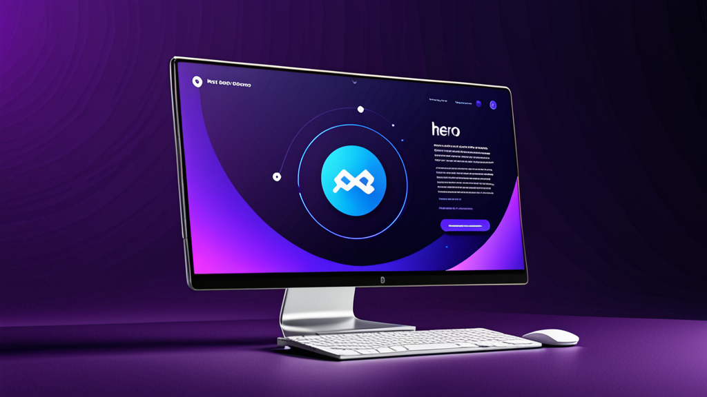

I migliori strumenti di risposta AI per messaggi di recruiting: Guida per recruiter a un outreach più intelligente
Se hai passato più di dieci minuti a scrivere un messaggio LinkedIn personalizzato per un candidato passivo, conosci il dolore. Vuoi che suoni umano, che faccia riferimento alla loro esperienza specifica e che includa il giusto invito all'azione — senza incollare accidentalmente il nome sbagliato dell'azienda.
I migliori strumenti di risposta AI per messaggi di recruiting risolvono esattamente questo problema. Ti aiutano a scrivere un outreach che sembri personale, non standardizzato. Ma non tutti gli strumenti funzionano allo stesso modo, e saperli usare efficacemente fa la differenza tra sembrare un robot e sembrare un recruiter che ha davvero fatto i compiti a casa.
Questa guida copre cosa cercare in un assistente AI per recruiter, come usarlo senza perdere la tua voce, e consigli pratici per migliorare i tuoi tassi di risposta.
Perché i recruiter hanno bisogno di un modo migliore per scrivere messaggi
I recruiter inviano dozzine — a volte centinaia — di messaggi ogni settimana. Ognuno richiede un cambio di contesto: rivedere il profilo del candidato, controllare la descrizione del lavoro e creare un messaggio che si distingua in una casella di posta affollata.
Il risultato? Molti recruiter ripiegano su template generici. I candidati li riconoscono all'istante. Secondo i dati di LinkedIn, i tassi di risposta per InMail si aggirano in media intorno al 20-25% — e quel numero cala drasticamente quando il messaggio sembra prodotto in serie.
Un generatore di messaggi per recruiter non fa solo risparmiare tempo. Ti aiuta a mantenere la qualità anche con volumi elevati. Quando puoi generare una bozza che include il ruolo del candidato, il settore e un dettaglio rilevante dal suo profilo, è più probabile ottenere una risposta.
Cosa rende migliori gli strumenti di risposta AI per messaggi di recruiting?
Non tutti gli strumenti di scrittura AI sono pensati per il recruiting. Prima di sceglierne uno, ecco cosa cercare:
1. Consapevolezza del contesto
Lo strumento dovrebbe capire chi sei, chi è il candidato e per quale ruolo stai facendo recruiting. I chatbot AI generici che non tengono conto del contesto produrranno bozze vaghe e inutilizzabili.
2. Controllo del tono
Devi poter regolare il tono — da professionale e formale a casuale e diretto. Un strumento di outreach per candidati che scrive in un solo stile non funzionerà per ruoli e settori diversi.
3. Integrazione con le piattaforme
I migliori strumenti funzionano dove già operi: LinkedIn Recruiter, Greenhouse, Lever, Workday. Doversi copiare e incollare tra schede diverse vanifica lo scopo dell'automazione.
4. Privacy e controllo
Non dovresti mai preoccuparti che la tua chiave API venga esposta o che i tuoi messaggi vengano inviati automaticamente. I migliori strumenti di risposta AI per messaggi di recruiting ti danno il pieno controllo su ciò che viene inviato e mantengono i tuoi dati in locale.
Come usare un assistente AI per recruiter senza sembrare AI
Anche il miglior strumento può produrre output rigidi se non lo guidi. Ecco come mantenere un tocco umano:
Inizia con un prompt forte
Non limitarti a premere "genera". Fornisci allo strumento dettagli specifici:
- Ruolo e azienda attuali del candidato
- Un progetto o risultato specifico dal loro profilo
- Perché questo ruolo è rilevante per il loro percorso professionale
Esempio di prompt:
"Scrivi un breve messaggio LinkedIn per un Senior Product Manager di Spotify. Menziona il suo lavoro sulla personalizzazione delle funzionalità. Il ruolo è per un Product Lead in una startup fintech di Serie B. Tono: amichevole ma professionale."
Modifica l'output
Leggi sempre la bozza prima di inviarla. Rimuovi qualsiasi frase che sembri innaturale. Aggiungi una domanda o osservazione personale che solo tu potresti notare. L'AI è un punto di partenza — la tua voce completa il messaggio.
Usa template diversi per fasi diverse
Un messaggio di cold outreach non dovrebbe suonare come una lettera di rifiuto. Un assistente AI per recruiter dovrebbe permetterti di passare tra:
- Primo contatto
- Follow-up (se nessuna risposta)
- Invito a colloquio
- Rifiuto o aggiornamento
Ogni fase richiede un tono e un livello di dettaglio diversi.
Esempi pratici: Prima e dopo l'assistenza AI
Vediamo scenari reali in cui uno strumento AI migliora il messaggio.
Cold Outreach
Prima (template generico):
"Ciao [Nome], ho visto il tuo profilo e penso che saresti perfetto per un ruolo nella nostra azienda. Fammi sapere se sei interessato."
Dopo (con assistente AI per recruiter):
"Ciao Sarah, il tuo lavoro sulla retention utenti in HubSpot mi ha colpito — specialmente la campagna che ha ridotto il churn del 12%. Stiamo costruendo un team di crescita simile in una Serie A e potremmo aver bisogno della tua esperienza. Sei disponibile per una breve chiacchierata questa settimana?"
Il secondo messaggio fa riferimento a un lavoro specifico, mostra ricerca e fa una domanda chiara. Questa è la differenza tra un "cancella" e una risposta.
Follow-Up
Prima:
"Riprendo il mio messaggio precedente. Fammi sapere se sei interessato."
Dopo:
"Ciao Sarah — so che sei impegnata, quindi sarò breve. Se il momento non è giusto, nessun problema. Ma se sei curiosa riguardo al ruolo, mi piacerebbe darti più dettagli. In ogni caso, grazie per averlo considerato."
Questo follow-up riconosce il tempo del candidato e toglie pressione, il che spesso porta a una risposta.
Consigli per migliorare i tassi di risposta dei candidati
Usare i migliori strumenti di risposta AI per messaggi di recruiting è solo una parte dell'equazione. Ecco altre strategie per migliorare il tuo outreach:
Personalizza oltre il profilo
Menziona qualcosa da un loro post recente, una connessione comune o una conferenza a cui hanno partecipato. L'AI non sempre coglie queste sfumature — aggiungile manualmente.
Mantienilo breve
I candidati leggono i messaggi da mobile. Punta a un massimo di 3-5 frasi. Se la bozza AI è più lunga, tagliala.
Includi una richiesta a basso impegno
Invece di "Possiamo fissare una chiamata?", prova "Se sei curioso, posso inviarti la descrizione del lavoro." Minore impegno = maggiore risposta.
Usa un oggetto chiaro (per email)
Se usi un ATS come Greenhouse o Lever, il tuo messaggio potrebbe finire nella loro casella di posta. Usa un oggetto come "Domanda rapida sulla tua esperienza in [Azienda]" — non "Opportunità di lavoro."
Perché l'automazione del recruiting dovrebbe comunque sembrare umana
Alcuni recruiter temono che usare l'AI li renda meno autentici. È vero il contrario. Quando automatizzi le parti ripetitive della scrittura, liberi energia mentale per le parti che contano: leggere il profilo del candidato, valutare la sua idoneità e costruire un rapporto.
Uno strumento di automazione del recruiting dovrebbe gestire la digitazione, non il pensiero. I migliori strumenti rispettano questo confine.
Scegliere lo strumento giusto per il tuo flusso di lavoro
Se stai valutando le opzioni, considera come lo strumento si inserisce nella tua routine quotidiana. Passi la maggior parte del tempo in LinkedIn Recruiter? O vivi dentro un ATS come Workday o Lever? I migliori strumenti di risposta AI per messaggi di recruiting si integrano perfettamente nel tuo flusso di lavoro esistente, non come un'app separata che devi ricordarti di aprire.
Considera anche la sicurezza. Se la tua organizzazione gestisce dati sensibili dei candidati, hai bisogno di uno strumento che elabori le informazioni localmente e non memorizzi i messaggi su server esterni. Il design incentrato sulla privacy conta più delle funzionalità appariscenti.
Uno strumento che soddisfa questi requisiti è RecruitReply AI — funziona all'interno di LinkedIn Recruiter e delle principali piattaforme ATS, utilizza AI su dispositivo e non invia mai messaggi automaticamente. Ma indipendentemente dallo strumento che scegli, i principi di questa guida sono validi.
Considerazioni finali
I migliori strumenti di risposta AI per messaggi di recruiting non servono a sostituire i recruiter. Servono a rimuovere gli attriti. Quando puoi generare una bozza personalizzata dal suono umano in pochi secondi, invii messaggi migliori, con maggiore costanza e con meno sforzo.
Questo porta a tassi di risposta più alti, migliori relazioni con i candidati e più tempo per le parti strategiche del recruiting che contano davvero.
Se sei pronto a provare uno strumento che rispetta il tuo flusso di lavoro e la privacy dei tuoi candidati, dai un'occhiata a RecruitReply AI. È costruito per recruiter che vogliono scrivere messaggi migliori — più velocemente — senza perdere la propria voce.